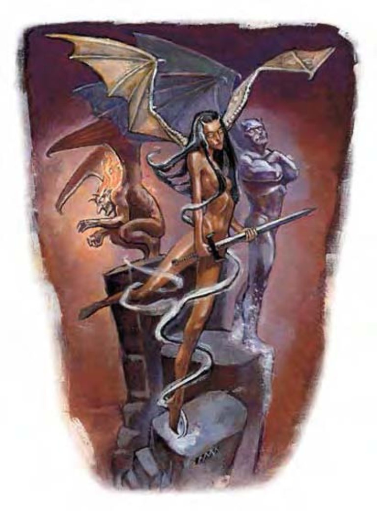

魔蝠是一种来自元素界的小生物，生性好奇，不同魔蝠的天性因孕育他们的元素性质而异。
所有魔蝠看起来都是长着翅膀的小型人形生物。虽然常被错认为小魔鬼，但他们的元素血统显而易见。
所有魔蝠都会以啮咬、爪抓或喷吐攻击作战，攻击的性质与效果则因魔蝠种类而异。
在计算伤害减免时，魔蝠的天生武器视为魔法武器。
喷吐攻击 (超自然)：魔蝠每1d4轮可用标准动作发动一次喷吐攻击。请参见各别内文。
类法术能力：所有魔蝠都至少有一个类法术能力（豁免检定DC=12+法术等级）。请参见各别内文。
“召唤魔蝠” (类法术能力)：每天1次，魔蝠可尝试召唤其他同类魔蝠，效果类似“召唤怪物术”，但成功机率只有25%。掷百分骰决定，失败则当天没有任何生物响应召唤。刚被召唤出来的魔蝠无法在1小时内使用其“召唤魔蝠”能力。此能力等同于二级法术。
快速医疗 (特异)：只要还活着且符合某些条件，魔蝠每轮可恢复2点生命值。参见各别内文。
一群类似的魔蝠（比如水魔蝠、冰魔蝠与泥魔蝠）会一同到他们觉得舒适的场所集会。
这种有翼生物看来像个矮小的灰白色人类，脚的部分则被旋风取代。风魔蝠来自风元素界。风魔蝠身高约4英尺，体重约1磅。风魔蝠通晓通用语与风族语。
| 资料栏位 | 风魔蝠 (Air Mephit) 小型异界生物 (风系、外界) |
| 生命骰 | 3d8 (13HP) |
| 先攻 | +7 |
| 速度 | 30英尺 (6格)、飞行60英尺 (灵活) |
| 防御等级 | 17 (+1体型、+3敏捷、+3天生)、接触14、措手不及14 |
| 基本攻击/擒抱 | +3 / -1 |
| 攻击 | 爪抓+4近战 (1d3) |
| 全力攻击 | 2爪抓+4近战 (1d3) |
| 占据/触及 | 5英尺 / 5英尺 |
| 特殊攻击 | 喷吐攻击、类法术能力、“召唤魔蝠” |
| 特殊能力 | 伤害减免5 / 魔法、黑暗视觉60英尺、快速医疗2 |
| 豁免 | 强韧+3、反射+6、意志+3 |
| 属性 | 力量10、敏捷17、体质10、智力6、感知11、魅力15 |
| 技能 | 唬骗+8、脱逃+9、躲藏+13、交涉+4、易容+2 (扮演+4)、威吓+4、聆听+6、潜行+9、侦察+6、绳技+3 (捆绑+5) |
| 专长 | 闪避、精通先攻 |
| 环境 | 风元素界 |
| 组织 | 单独 (1)、成队 (混杂2-4个各种魔蝠)、聚众 (混杂5-12个各种魔蝠) |
| 挑战级数 | 3 |
| 宝藏 | 标准 |
| 阵营 | 通常绝对中立 |
| 进化 | 4-6HD (小型)；7-9HD (中型) |
| 等级修正值 | +3 (部属) |
喷吐攻击 (超自然)：15英尺锥状沙尘，造成1d8点伤害，通过反射检定 (DC=12) 则伤害减半。豁免检定DC的调整值与体质调整值相同，包含+1种族加值。
类法术能力：风魔蝠可以让蒸汽围绕身旁达到“朦胧术”效果 (施法者等级3)，每小时可使用1次。此外，每天可以施展1次“造风术” (DC=14，施法者等级6)。豁免检定DC的调整值与魅力调整值相同。
快速医疗 (特异)：只要有流动气体就可让风魔蝠恢复生命值，如：微风、烟、法术效果或自己煽风。
这种有翼生物看来像个矮小的人类，有着灰色斑驳的皮肤与一脸忧伤的表情。灰魔蝠来自风元素界。灰魔蝠身高约4英尺，体重约有2磅。灰魔蝠通晓通用语与风族语。
| 资料栏位 | 灰魔蝠 (Dust Mephit) 小型异界生物 (风系、外界) |
| 生命骰 | 3d8 (13HP) |
| 先攻 | +7 |
| 速度 | 30英尺 (6格)、飞行50英尺 (灵活) |
| 防御等级 | 17 (+1体型、+3敏捷、+3天生)、接触14、措手不及14 |
| 基本攻击/擒抱 | +3 / -1 |
| 攻击 | 爪抓+4近战 (1d3) |
| 全力攻击 | 2爪抓+4近战 (1d3) |
| 占据/触及 | 5英尺 / 5英尺 |
| 特殊攻击 | 喷吐攻击、类法术能力、“召唤魔蝠” |
| 特殊能力 | 伤害减免5 / 魔法、黑暗视觉60英尺、快速医疗2 |
| 豁免 | 强韧+3、反射+6、意志+3 |
| 属性 | 力量10、敏捷17、体质10、智力6、感知11、魅力15 |
| 技能 | 唬骗+8、脱逃+9、躲藏+13、交涉+4、易容+2 (扮演+4)、威吓+4、聆听+6、潜行+9、侦察+6、绳技+3 (捆绑+5) |
| 专长 | 闪避、精通先攻 |
| 环境 | 风元素界 |
| 组织 | 单独 (1)、成队 (混杂2-4个各种魔蝠)、聚众 (混杂5-12个各种魔蝠) |
| 挑战级数 | 3 |
| 宝藏 | 标准 |
| 阵营 | 通常绝对中立 |
| 进化 | 4-6HD (小型)；7-9HD (中型) |
| 等级修正值 | +3 (部属) |
喷吐攻击 (超自然)：10英尺锥状沙尘，造成1d4点伤害，通过反射检定 (DC=12) 则伤害减半。未通过检定的活物将会感到全身搔痒、眼睛刺痛，造成3轮内AC-4、攻击检定-2。豁免检定DC的调整值与体质调整值相同，包含+1种族加值。
类法术能力：灰魔蝠可以让一团灰尘围绕身旁，达到“朦胧术”效果 (施法者等级3)，每小时可使用1次。此外，每天可以制造出一团滚动的灰尘，达到“风墙术”效果 (DC=15，施法者等级6)。豁免检定DC的调整值与魅力调整值相同。
快速医疗 (特异)：只要有干燥、灰尘弥漫的环境，就可让灰魔蝠恢复生命值。